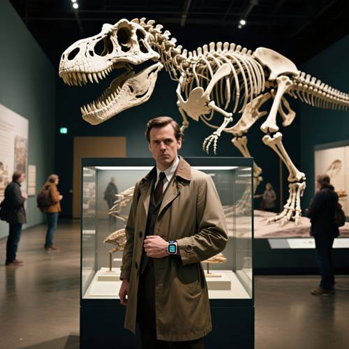
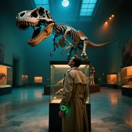

Entity Layout — Under the huge skeleton of the Tyrannosaurus rex, a detective wearing
Under the huge skeleton of the Tyrannosaurus rex, a detective wearing a retro windbreaker stood in front of the display cabinet. There were no other tourists in the exhibition hall, but he was wearing an electronic watch that did not belong to that era on his wrist, full of suspense movie qualities.

Direct — one call, no iterationContinuum — Kimi K3 + Qwen-Image
Judge — Direct
PASSEntity Layout - Three-Dimensional Space — In the image, a man is standing in front of a glass display cabinet. Behind and above him is the large skeleton of a Tyrannosaurus rex.
PASSStyle — The image has a cinematic feel, characterized by focused lighting, deep shadows, and a serious expression on the man's face. The anachronistic detail of the modern watch on his retro attire creates a sense of mystery, aligning with suspense movie qualities.
FAILGrammar - Negation — The image shows other people in the background of the exhibition hall. There are at least two individuals on the left and one on the right, contradicting the prompt's requirement of 'no other tourists'.
PASSCompound - Feature Matching — The central male figure wears a tan trench coat, which fits the description of a retro windbreaker or coat. A modern electronic watch is clearly visible on his left wrist.
PASSWorld Knowledge — The image displays a large, bipedal dinosaur skeleton with a massive skull and small forelimbs, which is identifiable as a Tyrannosaurus rex.
Judge — Continuum
PASSEntity Layout - Three-Dimensional Space — The image depicts a man standing in front of a glass display cabinet. A large skeleton of a Tyrannosaurus rex is positioned above and behind him, so he is both under the skeleton and in front of the display cabinet.
PASSStyle — The image uses dramatic lighting, with a dark, moody color palette of blues and teals contrasted by warm spotlights and an eerie green glow from the watch. A full moon is visible through a skylight, enhancing the mysterious atmosphere, which is consistent with 'suspense movie qualities'.
PASSGrammar - Negation — The exhibition hall is empty except for the single male figure. There are no other people or tourists visible in the background or foreground.
PASSCompound - Feature Matching — The man is wearing a beige trench coat, which fits the description of a 'retro windbreaker'. On his left wrist, a bright green, glowing electronic watch is clearly visible.
PASSWorld Knowledge — The image features a large, accurately depicted skeleton of a bipedal carnivorous dinosaur with a massive skull, short two-fingered forelimbs, and a long tail, which is identifiable as a Tyrannosaurus rex.
What the agent did
Thinking
Let me analyze this prompt: - A museum exhibition hall with a huge T-rex skeleton - A detective wearing a retro windbreaker (trench coat style) standing in front of a display cabinet - No other tourists in the hall (empty museum) - He wears an electronic watch that doesn't belong to that era (anachronistic digital watch) on his wrist - Full of suspense movie qualities (cinematic, moody, film noir atmosphere) This suggests a retro/vintage setting (maybe 1970s-80s museum aesthetic, or even older — mid-20th century detective) but with a modern digital watch as an anachronistic detail. The suspense movie quality means dramatic lighting, film grain, moody atmosphere. Let me generate this image with qwen-image as instructed. I should not set seed, and use default steps/guidance. Key visual elements: 1. Huge T-rex skeleton dominating the scene 2. Detective in retro windbreaker/trench coat, seen from behind perhaps, standing in front of a display cabinet 3. Empty exhibition hall, no tourists 4. Electronic (digital) watch on his wrist — anachronistic 5. Suspense movie cinematography — dramatic shadows, moody lighting, film grain For the watch to be visible, I might want the detective's wrist visible. Maybe a composition where he's seen from behind/side, arm raised slightly or hand in pocket... Actually to make the watch visible, maybe he's looking at his watch or his arm is positioned so the watch shows. Let me compose: "seen from behind at three-quarter angle, his left arm visible with a glowing digital watch on the wrist." Let me write a detailed prompt: "Cinematic suspense film still: a vast, empty natural history museum exhibition hall at night, dominated by the huge mounted skeleton of a Tyrannosaurus rex looming overhead. Beneath it, a lone detective in a retro beige windbreaker trench coat stands before a glass display cabinet, seen from behind at a three-quarter angle. No other visitors. On his visible left wrist, an anachronistic modern electronic digital watch with a glowing green LCD display. Dramatic low-key lighting, cold moonlight through high skylights mixing with dim amber spotlights on the fossil, deep shadows, volumetric haze, film grain, teal-and-amber color grade, 35mm anamorphic movie still, moody thriller atmosphere." That's good. Let me generate with qwen-image. Width/height — probably default 1024, but cinematic might be wider. The harness controls sizes... "Do not set a seed. Sizes and seeds are controlled by the harness." Hmm, that says sizes are controlled by harness, so I should probably omit width/height too? It says "Do not set a seed. Sizes and seeds are controlled by the harness." So I'll omit width and height as well, letting defaults apply. Let me generate.
Model
I'll start by generating this cinematic museum scene with the anachronistic detail.
Step 1 — `generate_image`
{
"prompt": "Cinematic suspense film still: a vast, empty natural history museum exhibition hall at night, dominated by the huge mounted skeleton of a Tyrannosaurus rex looming overhead with gaping jaws. Beneath the skeleton, a lone detective in a retro beige windbreaker trench coat stands before a tall glass display cabinet, seen from behind at a three-quarter angle, head slightly tilted up at the fossil. The hall is completely deserted, no other visitors. On his visible left wrist rests an anachronistic modern electronic digital watch with a faint glowing green LCD display. Dramatic low-key lighting, cold bluish moonlight falling through high skylights mixing with dim amber spotlights on the fossil bones, deep shadows, volumetric haze, polished marble floor with faint reflections, film grain, teal-and-amber color grade, 35mm anamorphic movie still, moody thriller atmosphere, tension and mystery.",
"model": "qwen-image"
}
Result img_0

Thinking
The first generation is quite good! Let me inspect it against the prompt: 1. ✅ Huge T-rex skeleton looming overhead — very well done, dominates the frame 2. ✅ Detective in retro windbreaker/trench coat (beige trench coat) standing in front of a display cabinet — yes, he's in front of a glass display case 3. ✅ Empty exhibition hall, no other tourists — yes, deserted 4. ✅ Electronic watch visible on his wrist with glowing green display — yes! Visible on his left wrist 5. ✅ Suspense movie qualities — moody teal lighting, moon, spotlights, film noir atmosphere The composition is strong. Let me zoom in on the watch to verify it looks like a proper electronic/digital watch, since that's the key anachronistic detail. Let me inspect the watch region.
The watch close-up: it's a square-ish digital watch with a glowing green display. The digits on it look a bit garbled ("14!" or something) but it clearly reads as an electronic digital watch. The display shows some digits. It looks reasonably like an electronic watch — glowing green LCD. Good enough — the exact digits aren't specified in the prompt. The watch looks a bit chunky/glowy — almost like a smartwatch with heavy green glow. But that's fine, it's clearly an electronic watch which is the anachronistic element required. Minor observations on the full image: - The detective's coat looks good, retro trench coat / windbreaker style - The display cabinet is present - Empty hall ✓ - T-rex skeleton is huge and dramatic ✓ - Suspense mood ✓ One thing: the watch glow is quite strong, casting green light. That's actually stylish and emphasizes the anachronism. The digits are slightly garbled but at full image scale that's not noticeable. I think this image is already very good and matches all requirements. Let me mark it as best. Per the stopping criteria — "Good enough is a stop condition." All elements are present and correct. Could I improve? Perhaps the watch digits could be crisper, but the prompt doesn't specify exact digits. The composition, mood, and all requested elements are there. I'll mark best and stop.
Step 3 — `mark_best`
{
"image": "img_0",
"reason": "All prompt elements present and correct: huge T-rex skeleton looming over an empty exhibition hall, lone detective in retro trench coat before a glass display cabinet, anachronistic glowing electronic watch clearly visible on his wrist, and strong suspense-film cinematography (teal/amber grade, moonlight, haze, deep shadows)."
}
Thinking
The image is marked. All elements verified. Per stopping criteria, good enough is a stop condition. I'll summarize for the user.
Model
The image is complete and matches every element of your description: - **The huge T-rex skeleton** dominates the frame, jaws gaping, looming directly over the scene - **The detective** in a retro beige windbreaker/trench coat stands before the glass display cabinet, gazing up at the fossil - **The hall is completely empty** — no other tourists, just silent display cases stretching into shadow - **The anachronistic electronic watch** glows green on his wrist — a digital LCD that clearly doesn't belong to the era his coat and the setting suggest, verified up close - **Suspense-movie quality**: teal-and-amber color grade, cold moonlight through the skylight, volumetric haze, deep noir shadows, and reflective marble floors The glowing green watch against the warm amber-and-teal palette naturally draws the eye — it reads as the "wrong" detail in the scene, exactly the kind of quiet clue a suspense film would plant.